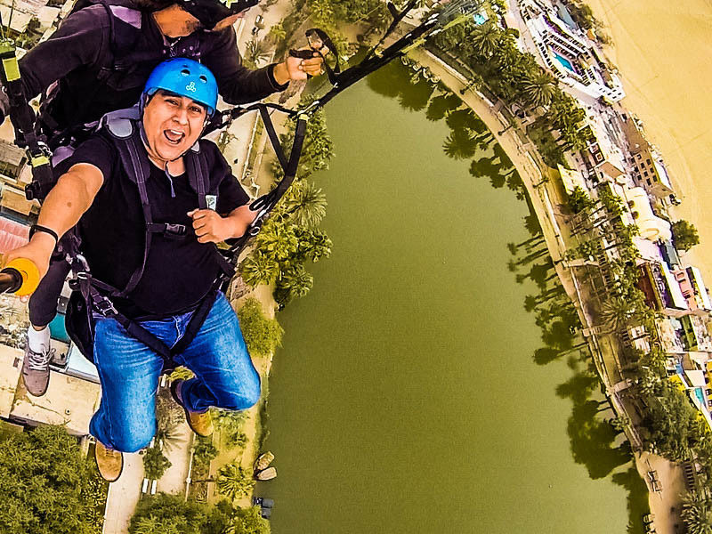
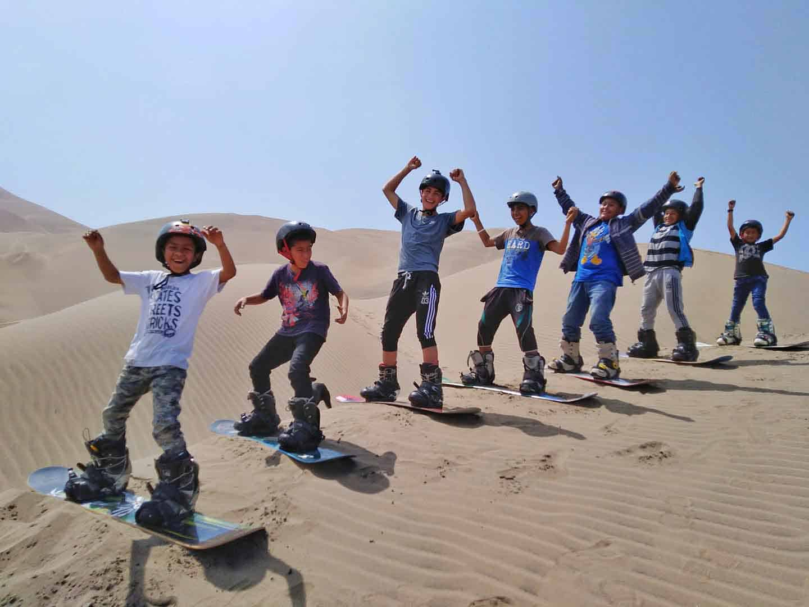

ACTIVIDADES RELAJANTES
- Visitar las bodegas turisticas enologicas
- Visitar las brujas de cachiche
- el Santuario de la virgen de Yauca
Los Tubulares en Ica, alrededor de la Laguna de la Huacachina, es una experiencia llena de diversión, que vale muchísimo la pena realizar; además de ser una aventura llena de adrenalina, es una actividad versátil que puedes hacer solo, con familia o amigos y es económica.
Vuela por las imponentes Dunas de Huachina como lo hacen las aves, no necesitas saber nada de vuelo, el piloto se encarga de todo, tu sólo camina, vuela y disfruta. El Parapente es la forma más libre de vuelo que hay, sin ruidos ni vibraciones, solo tú y el viento. Nunca el desierto de se vio en semejante amplitud de belleza, simplemente te asombrará!
Se trata de un deporte extremo parecido al surf, pero en lugar de practicarse en el mar, se practica en la arena. Se practica con una tabla que cuenta con dos agarraderas para meter los pies, lo que hace más fácil no caerse y poder desplazarse moviendo el torso únicamente. La arena es una superficie bastante irregular, lo que hace que este deporte sea muy apasionante, teniendo además algunas ventajas frente al surf en el mar.
Las ventajas que presenta el sandboard frente al surf común son las siguientes: puede practicarlo cualquier persona sin necesitar experiencia, cada persona puede definir el grado de dificultad que quiere, se puede practicar cualquier día sin que interfiera el clima (o la calidad de las olas), la tabla es de menor tamaño, por lo que es más manejable, no tiene mucho riesgo para principiantes (aunque si se necesita un instructor).
